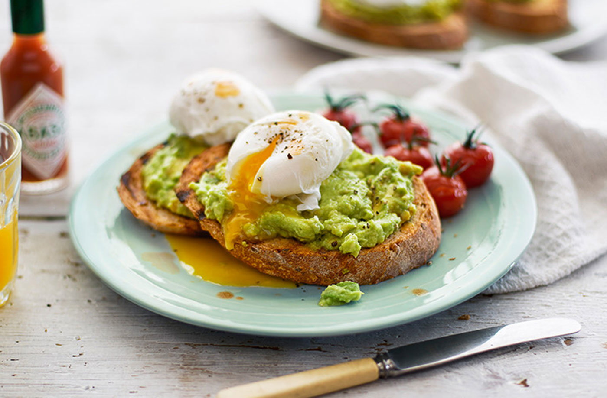

Smashed Avocado with Sourdough bread recipe

Description
This simple avocado on toast with poached eggs and tomatoes is so tasty and can be made in under 30 minutes. The 'Energiser' is perfect for a lazy breakfast or brunch when you need a little boost.
ingredients
- ½ x 220g cherry tomatoes on the vine
- 2 tablespoons white wine vinegar
- 2 ripe avocados
- 1 lime, juiced
- 6 drops hot pepper sauce, plus extra to serve
- 4 slices sourdough
- 1 tbsp extra-virgin olive oil
- 2 eggs
- mixed salad, to serve
Steps
- Preheat the oven to gas 6, 200°C, fan 180°C. Put the tomatoes in a small roasting tin and cook for 15 minutes, or until softened and just starting to split.
- Meanwhile, fill a large pan with water and bring to the boil; add the vinegar. Cut the avocados in half and scoop out the flesh into a bowl (discard the stone). Add half the lime juice, the pepper sauce and some salt. Using the back of a spoon, roughly smash the avocado, until chunky but spreadable.
- Preheat the grill to its highest setting or set a griddle pan on the hob over a medium-high heat. Brush the sourdough slices with the oil on both sides and toast for 1-2 minutes on each side, or until lightly charred.
- Poach the eggs in the pan of boiling water for 2-3 minutes, until the whites are set but the yolks are still runny*. Remove with a slotted spoon and drain on kitchen paper.
- Spread the sourdough toasts with the smashed avocado and divide between two plates, along with the roasted tomatoes and some salad. Top each with a poached egg and season with some freshly cracked black pepper. Serve with a drizzle of hot pepper sauce, if you like.
Tip: for a great flavour combo, rustle up a red pepper, feta and rocket side salad.
Back to main page